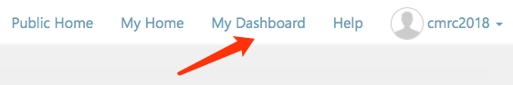
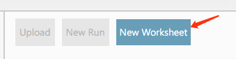
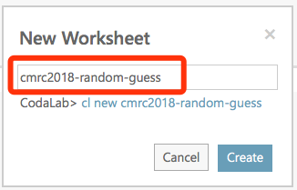
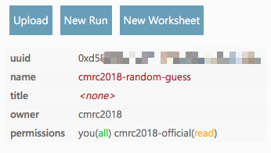
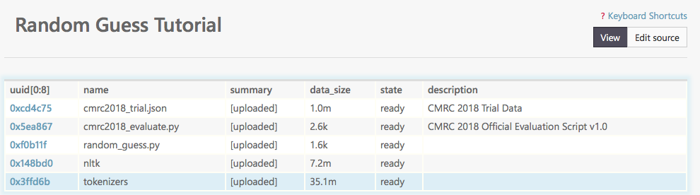
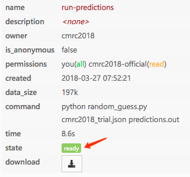
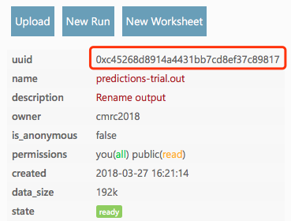
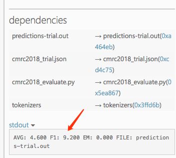
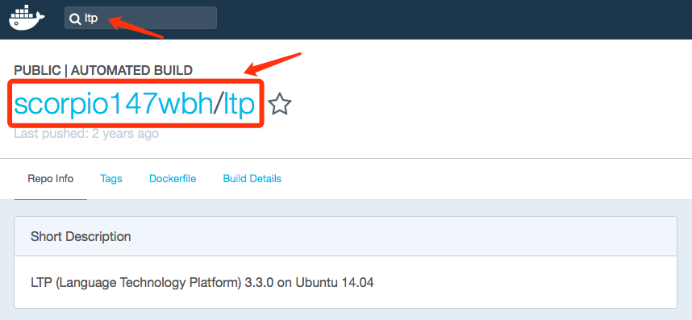

提交流程
重要说明
- 本次系统提交使用的是CodaLab在线提交系统。
- 由于本届评测报名人数较多，为了保证评测过程的顺利进行，所有系统必须通过CodaLab进行提交，不接受线下调试，敬请谅解。
- 请各参赛队伍一定充分预留时间熟悉Codalab平台，避免最终提交失败。难点在配置运行环境上，如采用了较多的第三方库或对版本要求较高则可能需要自行配置docker。若只使用单一的深度学习库，例如Theano/Tensorflow/PyTorch/Keras等则可参考下方常用Docker一节自行选择。
- 暂不接受未报名参加人员的测试请求，请在本届评测结束后发送请求。
- 请在离线环境解码成功后再上传至Codalab，避免计算资源的浪费。
- 官方Tutorial，请参考：https://github.com/codalab/codalab-worksheets/wiki
提交开发集/测试集系统
请填写下列表单提交系统验证：提交表单
为了确保系统能够在测试集上正常运行，请参赛队伍务必在开发集系统验证期间提交系统，保证系统的顺利运行。 通常情况下，系统结果将在1个工作日内上传至官方排行榜中（排行榜非匿名）。
【注意事项】
- 本周开始（2018年7月2日周一），每个报名队伍每周可同时提交两个系统，以避免提交最终系统时因细微参数差别导致结果大幅变化。截止至系统验证结束（即8月7日）共计6周，即最多6次提交机会，每周一重置提交权限。
- 每周只允许提交一次结果，即6次提交需分散在6周，如某一周没有提交，则当周提交机会自动作废。
- 本次评测不限制使用外部资源，允许合理使用外部资源提升系统性能（但需在最终的系统描述中说明）。
- 开发集、预测试集的结果不影响评测的最终排名，仅供参考。
- 由于参赛人数较多，评测委员会不接受Codalab以外的验证方式，敬请谅解。
- 所有系统必须在2018年8月7日前至少提交一次系统，否则将失去在隐藏测试集上的验证机会。
- 若在3个工作日内仍未见到结果更新至排行榜，请发送邮件至cmrc2018@126.com。
注册Codalab账户
请根据实际情况填写注册表单，注册流程不再赘述。注册链接：Codalab注册
上传代码&运行源程序
以下以官方提供的Random Guess Tutorial为例进行说明。地址：Codalab
1. 新建工作目录
注册完毕之后，登陆到系统中。点击右上角的My Dashboard

新建一个Worksheet，名称可以根据实际情况填写


2. 设置工作目录权限（非常重要！）
进入到新建的worksheet，首先设置该worksheet的权限
注意:请一定在上传任何数据之前设置权限，否则可能导致源代码泄露！
设置cmrc2018-official用户组对当前worksheet的权限为read。
> cl wperm . cmrc2018-official read
设置public用户组（全体用户）对当前worksheet的权限为none。
> cl wperm . public none
此时右侧worksheet属性应显示如下：

3. 打包上传解码源程序
请将所有解码相关文件打包成zip文件上传至worksheet中，请耐心等待上传过程。上传完毕后压缩包将自行解压。如文件较少也可以逐一上传。
4. 复制官方试验集/开发集，评测脚本
官方公开集合worksheet地址： Codalab
本例中，我们将解码试验集(trial data)，首先运行下列命令进行试验集数据的拷贝：
> cl add bundle 0xcd4c755829064426896ef942a249aced .
注意：提交系统验证时，必须使用官方的开发集Bundle（通过cl add bundle添加，而非自行上传），否则无法进行测试。

5. 对试验集进行解码
参赛选手运行自定义的解码命令，在本例中我们使用如下命令，
> cl run cmrc2018_trial.json:cmrc2018_trial.json random_guess.py:random_guess.py tokenizers:tokenizers "python random_guess.py cmrc2018_trial.json predictions.out" -n run-predictions
-
random_guess.py依赖nltk，故需要在worksheet中上传nltk离线调用包 - 如果需要其他环境依赖，可在命令中添加
--request-docker-image tboquet/kenacuthe7hc5
其中tboquet/kenacuthe7hc5可替换成自己需要的环境docker，该包中提供了常见的深度学习所使用的库(主要为Anaconda+Theano+Keras)。 - 选择适合自己程序的环境包：https://github.com/codalab/codalab-worksheets/wiki/Execution#overview-how-the-worker-system-works
- 参赛队伍也可自行对运行环境进行打包，上传至docker并调用。
- 常用的docker请参考下方的“常用Docker”一栏。
6. 等待程序运行完毕
Codalab上的运行状态包含如下几种：
created: 表示任务刚刚创建staged: 准备开始运行running: 正在正常运行failed: 程序错误退出
如果出错，则根据stderr的输出对自己的程序进行调试。
程序运行完成后会显示为：ready

7. 将结果输出为文件
运行下列命令将结果输出为文件，提交系统时，需要提供该bundle的UUID
> cl make run-predictions/predictions.out -n predictions-trial.out

8. 对输出结果进行评价
> cl run predictions-trial.out:predictions-trial.out cmrc2018_trial.json:cmrc2018_trial.json cmrc2018_evaluate.py:cmrc2018_evaluate.py tokenizers:tokenizers "python cmrc2018_evaluate.py cmrc2018_trial.json predictions-trial.out"
运行结束后，右侧会显示预测结果，如下图
注意：Random Guess存在随机性，结果不唯一。

常用Docker
Codalab上需要加载自己的环境文件，现在有一些共享的环境供大家参考。
或者大家也可自行在http://hub.docker.com中搜索自己需要的环境&版本。
以下是常用的docker（以下命令加在运行测试脚本时）：
1. Theano + Keras:
--request-docker-image tboquet/kenacuthe7hc5
2. Tensorflow:
--request-docker-image tensorflow/tensorflow
3. CNTK:
--request-docker-image microsoft/cntk
4. PyTorch:
--request-docker-image floydhub/pytorch
5. LTP:
--request-docker-image scorpio147wbh/ltp
6. Anaconda:
--request-docker-image continuumio/anaconda
7. Tensorlayer:
--request-docker-image gmueller/tensorlayer
8. Torch:
--request-docker-image kaixhin/torch
常见问题（持续更新中）
1、python程序报import错误
答：请尽量自包含需要的Python包。或者使用已有的docker文件。例如需要LTP，则在http://hub.docker.com中搜索ltp，如下图

然后在运行测试程序的命令中加入
--request-docker-image scorpio147wbh/ltp
2、无法加载多个docker
答：为了保证环境的一致性，Codalab无法加载多个docker。如对环境版本要求严格，请自行配置docker并上传到hub.docker.com上，并在使用时加载对应的docker。
3、如何使用GPU资源
答：Codalab上提供了M60 GPU的支持，只需在运行命令中加入--request-gpus 1。
联系我们
如果在运行中出现问题，请联系我们：cmrc2018 [at] 126 [dot] com